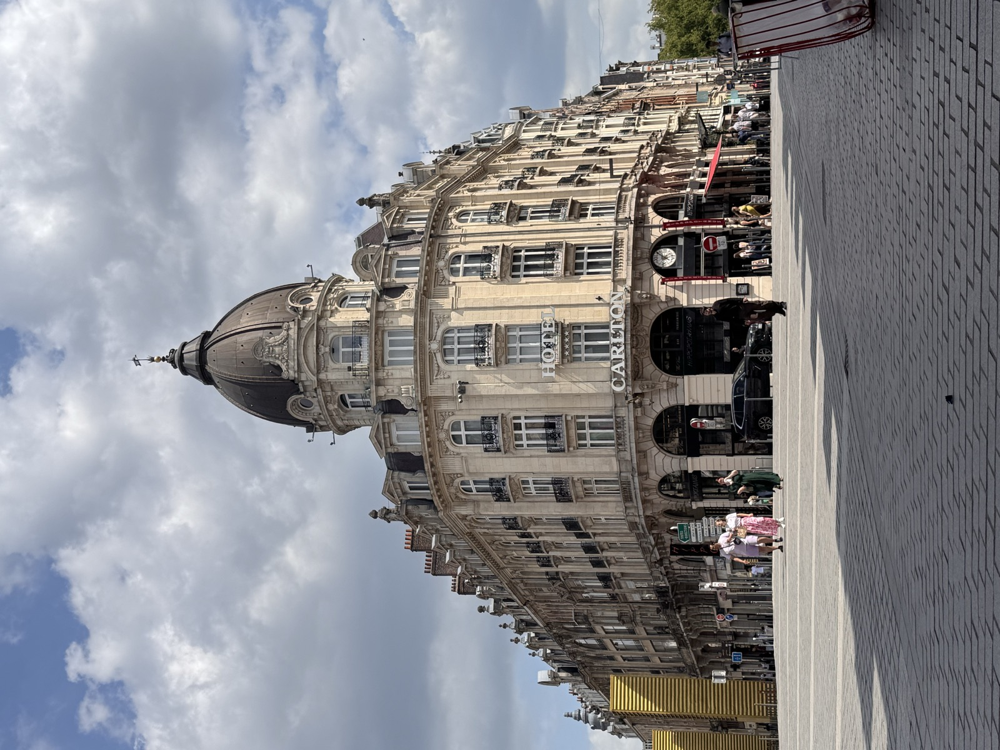
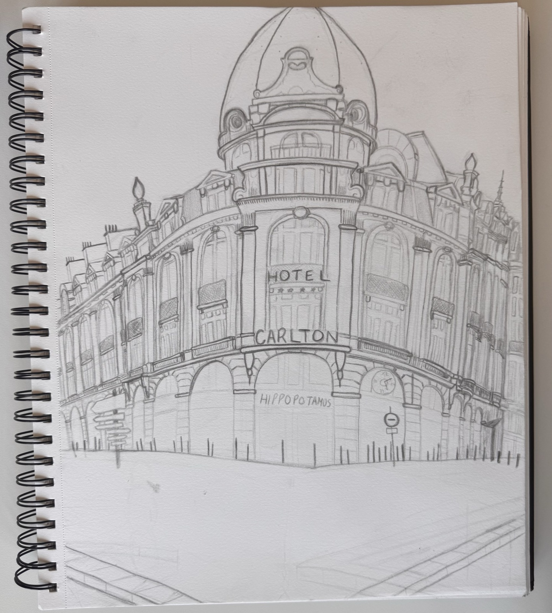

Overview
Between June and July 2025, I traveled to Lille, France for the Engineering and Art program, a study abroad experience that pairs technical coursework with hands-on creative training.
During my time there, I took Physics 2 with Calculus, including its lab component, alongside a drawing course called Engineering Art: The French Perspective, which paired technical problem-solving with an entirely different way of seeing and creating.
Beyond the classroom, the program included excursions to Belgium and London, giving me a broader view of European culture and history alongside my studies in Lille.
Reflection
This was my first time leaving my home country, and the program really ignited a passion for international travel and cultural immersion. The two months in France truly broadened my perspective, opening my eyes to the different ways that life can be lived. It also gave me an appreciation for the little things, like coffee and pastries shared between friends in a quiet café.
Photos
1 / 14
Artwork Showcase
For the Engineering Art class, we spent weeks observing and drawing the beautiful scenery that France has to offer. The course culminated in a larger final piece: a detailed drawing of a scene that represents my time in France.


A few highlights from the sketches and studies completed throughout the course.
1 / 5
Acknowledgements
Special thank you to Joel Parker and the Lille ESP (European Summer Program) team.